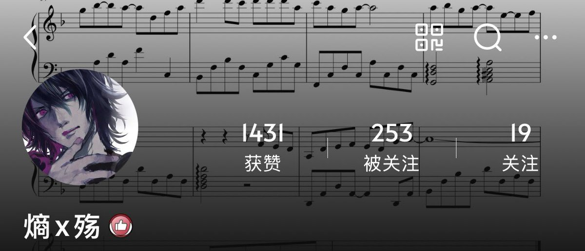

大狐帝国史官邹智萱（笔名段歌文）
@Rococo90933671
@EntropyF73 所以我碰到这种不常用的平台，反而是把能绑的都绑上，这样就只需要试一次

Entropy 📎💙
@EntropyF73
太久不登知乎，今天上去一看它给我账号退了，然后拿几种登录方式一个个试，微信不对QQ不对手机号也不对，都不是我发过文章那个号，给我试得汗流浃背了
心想不会找不回来了吧，最后用微博登录给试出来了（头像还是东京喰种里的角色）好险好险，那个号里都是回忆啊
以及当年是怎么想着用微博登录的啊🫠 https://t.co/5D73JbeeA5